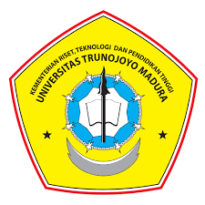

UNIVERSITAS TRUNOJOYO MADURA

Universitas Trunojoyo Madura yang awalnya Universitas Bangkalan,
adalah Perguruan Tinggi Negeri yang terletak di Kabupaten Bangkalan, Madura,
Provinsi Jawa Timur, Indonesia. Universitas ini menjadi Perguruan Tinggi Negeri
berdasarkan Keputusan Presiden tanggal 5 Juli 2001.
Perguruan tinggi ini diresmikan pada tanggal 23 Juli 2001 oleh Presiden Abdurrahman Wahid.
Universitas Trunojoyo Madura merupakan Perguruan Tinggi Negeri ke-7
di Jawa Timur dan dikenal dengan sebutan UTM.
Universitas ini memiliki 7 fakultas dengan beragam prodi di dalamnya.